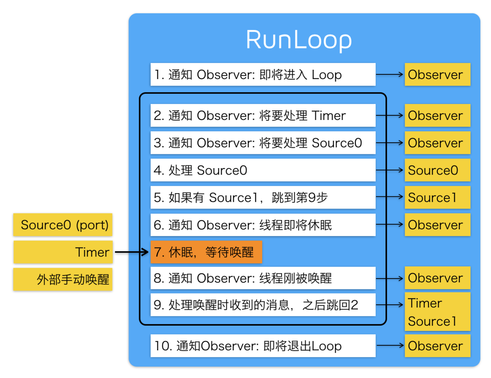

iOS 面试 - RunLoop
- 什么是 RunLoop
- RunLoop 的数据结构
- RunLoop 的 Mode
- RunLoop 的实现机制和内部逻辑
- RunLoop 和线程
- PerformSelector 的实现原理？
- autoreleasePool 在何时被释放？
- 子线程里面，需要加 autoreleasepool 吗
- 事件响应的过程？
- 手势识别的过程？
- 解释一下 NSTimer
什么是 RunLoop
RunLoop 是通过内部维护的事件循环 (Event Loop) 来对事件 / 消息进行管理的一个对象。
1、没有消息处理时，休眠已避免资源占用，由用户态切换到内核态(CPU - 内核态和用户态)
2、有消息需要处理时，立刻被唤醒，由内核态切换到用户态
主要作用：1. 保证程序不退出。2. 监听事件(如触摸事件、时钟事件、网络事件)。
还可以：
1. 监听主线程 Runloop 的状态，在主线程空闲的时候或者合适的时候去执行一些任务。
比如，把一个大任务拆分成一个个小任务，当主线程处于休眠状态时 (kCFRunLoopBeforeWaiting)
依次提交到 Runloop 里执行，合理利用 CPU，提高 CPU 使用效率。
2. 根据主线程 Runloop 的状态(kCFRunLoopBeforeSources 和 kCFRunLoopAfterWaiting，
即正在处理任务的状态)，做实时监控主线程卡顿。
3. 可以自己创建一个后台线程，并且开启 Runloop 来等待任务或者用来专门处理某类任务。
比如，AFNetworking 中创建一个后台线程来专门接收 Delegate 回调。
4. 根据 Runloop 的 Mode 来提交不同的任务，然后根据状态在 Mode 之间切换。
比如 TableView 中将加载图片的任务放到 NSDefaultRunLoopMode 模式下去处理，
保证 UITrackingRunLoopMode 模式下界面滑动的流畅性。
RunLoop 的数据结构
NSRunLoop(Foundation)是 CFRunLoop(CoreFoundation)的封装，提供了面向对象的 API
RunLoop 相关的主要涉及五个类：
CFRunLoopRef：RunLoop 对象
CFRunLoopModeRef：运行模式
CFRunLoopSourceRef：输入源 / 事件源
CFRunLoopTimerRef：定时源
CFRunLoopObserverRef：观察者
一个 RunLoop 包含若干个 Mode，每个 Mode 又包含若干个 Source/Timer/Observer。
每次调用 RunLoop 的主函数时，只能指定其中一个 Mode，这个 Mode 被称作 CurrentMode。
如果需要切换 Mode，只能退出 Loop，再重新指定一个 Mode 进入。
这样做主要是为了分隔开不同组的 Source/Timer/Observer，让其互不影响。
CFRunLoopSource 分为 source0 和 source1 两种
source0: 即非基于 port 的，也就是用户触发的事件。需要手动唤醒线程，将当前线程从内核态切换到用户态
source1: 基于 port 的，包含一个 mach_port 和一个回调，可监听系统端口和通过内核和其他线程发送的消息，
能主动唤醒 RunLoop，接收分发系统事件。具备唤醒线程的能力。
CFRunLoopTimer: 基于时间的触发器，它和 NSTimer 是 toll-free bridged 的，可以混用。
其包含一个时间长度和一个回调（函数指针）。当其加入到 RunLoop 时，RunLoop 会注册对应的时间点，
当时间点到时，RunLoop 会被唤醒以执行那个回调。
CFRunLoopObserver: 观察者，每个 Observer 都包含了一个回调（函数指针），
当 RunLoop 的状态发生变化时，观察者就能通过回调接受到这个变化。
typedef CF_OPTIONS(CFOptionFlags, CFRunLoopActivity) {
kCFRunLoopEntry = (1UL << 0), // 即将进入 Loop
kCFRunLoopBeforeTimers = (1UL << 1), // 即将处理 Timer
kCFRunLoopBeforeSources = (1UL << 2), // 即将处理 Source
kCFRunLoopBeforeWaiting = (1UL << 5), // 即将进入休眠
kCFRunLoopAfterWaiting = (1UL << 6), // 刚从休眠中唤醒
kCFRunLoopExit = (1UL << 7), // 即将退出 Loop
kCFRunLoopAllActivities = 0x0FFFFFFFU // 所有状态
};
RunLoop 的 Mode
一个 RunLoop 对象中可能包含多个 Mode，且每次调用 RunLoop 的主函数时，
只能指定其中一个 Mode(CurrentMode)。
切换 Mode，需要重新指定一个 Mode 。
主要是为了分隔开不同的 Source、Timer、Observer，让它们之间互不影响。
总共是有五种 CFRunLoopMode:
kCFRunLoopDefaultMode：默认模式，主线程是在这个运行模式下运行
UITrackingRunLoopMode：跟踪用户交互事件（用于 ScrollView 追踪触摸滑动，
保证界面滑动时不受其他 Mode 影响）
UIInitializationRunLoopMode：在刚启动 App 时第进入的第一个 Mode，启动完成后就不再使用
GSEventReceiveRunLoopMode：接受系统内部事件，通常用不到
kCFRunLoopCommonModes：伪模式，不是一种真正的运行模式，
是同步 Source/Timer/Observer 到多个 Mode 中的一种解决方案
RunLoop 的实现机制和内部逻辑
对于 而言最核心的事情就是保证线程在没有消息的时候休眠，在有消息时唤醒，以提高程序性能。
这个机制是依靠系统内核来完成的(苹果操作系统核心组件 Darwin 中的 Mach)。
RunLoop 通过 mach_msg()函数接收、发送消息。
它的本质是调用函数 mach_msg_trap()，相当于是一个系统调用，会触发内核状态切换。
在用户态调用时会切换到内核态; 内核态中内核实现的 mach_msg()函数会完成实际的工作。
即基于 port 的 source1，监听端口，端口有消息就会触发回调;
而 source0，要手动标记为待处理和手动唤 醒 RunLoop
大致逻辑如下：
1. 通知 Observer 已经进入了 RunLoop
2. 通知 Observer 即将处理 Timer
3. 通知 Observer 即将处理非基于端口的输入源（即将处理 Source0）
4. 处理那些准备好的非基于端口的输入源（处理 Source0）
5. 如果基于端口的输入源准备就绪并等待处理，请立刻处理该事件。转到第 9 步（处理 Source1）
6. 通知 Observer 线程即将休眠
7. 将线程置于休眠状态，直到发生以下事件之一:
(1)事件到达基于端口的输入源（port-based input sources）(也就是 Source0)
(2)Timer 到时间执行
(3)外部手动唤醒
(4)为 RunLoop 设定的时间超时
8. 通知 Observer 线程刚被唤醒（还没处理事件）
9. 处理待处理事件：
(1)如果是 Timer 事件，处理 Timer 并重新启动循环，跳到第 2 步
(2)如果输入源被触发，处理该事件（文档上是 deliver the event）
(3)如果 RunLoop 被手动唤醒但尚未超时，重新启动循环，跳到第 2 步
10. 通知观察者 RunLoop 结束。

RunLoop 和线程
线程和 RunLoop 是一一对应的, 其映射关系是保存在一个全局的 Dictionary 里，
线程是 key ，Runloop 是 value。
自己创建的线程默认是没有开启 RunLoop 的
创建一个常住线程：
1、为当前线程开启一个 RunLoop（第一次调用 [NSRunLoop currentRunLoop]
方法时实际是会先去创建一个 RunLoop）
2、向当前 RunLoop 中添加一个 Port/Source 等维持 RunLoop 的事件循环
（如果 RunLoop 的 mode 中一个 item 都没有，RunLoop 会退出）
3、启动该 RunLoop
PerformSelector 的实现原理？
当调用 NSObject 的 performSelecter:afterDelay: 后，
实际上其内部会创建一个 Timer 并添加到当前线程的 RunLoop 中。
所以如果当前线程没有 RunLoop，则这个方法会失效。
当调用 performSelector:onThread: 时，实际上其会创建一个 Timer 加到对应的线程去，
同样的，如果对应线程没有 RunLoop 该方法也会失效。
autoreleasePool 在何时被释放？
1.App 启动后，苹果在主线程 RunLoop 里注册了两个 Observer，
其回调都是 _wrapRunLoopWithAutoreleasePoolHandler()。
2. 第一个 Observer 监视的事件是 Entry(即将进入 Loop)，
其回调内会调用 _objc_autoreleasePoolPush() 创建自动释放池。
其 order 是 -2147483647，优先级最高，保证创建释放池发生在其他所有回调之前。
3. 第二个 Observer 监视了两个事件： BeforeWaiting(准备进入休眠)
时调用_objc_autoreleasePoolPop() 和 _objc_autoreleasePoolPush() 释放旧的池并创建新池；
Exit(即将退出 Loop) 时调用 _objc_autoreleasePoolPop() 来释放自动释放池。
这个 Observer 的 order 是 2147483647，优先级最低，保证其释放池子发生在其他所有回调之后。
4. 在主线程执行的代码，通常是写在诸如事件回调、Timer 回调内的。
这些回调会被 RunLoop 创建好的 AutoreleasePool 环绕着，
所以不会出现内存泄漏，开发者也不必显示创建 Pool 了
子线程里面，需要加 autoreleasepool 吗
默认主线的 runloop 是开启的，子线程的 runloop 默认是不开启的，
也就意味着子线程中不会创建 autoreleasepool，所以需要我们自己在子线程中创建一个自动释放池。
（子线程里面使用的类方法都是 autorelease, 就会没有池子可释放，
也就意味着后面没有办法进行释放，造成内存泄漏。）
在主线程中如果产生事件那么 runloop 才回去创建 autoreleasepool，
通过这个道理我们就知道为什么子线程中不会创建自动释放池了，
因为子线程的 runloop 默认是关闭的，所以他不会自动创建 autoreleasepool，需要我们手动添加。
NSThread 和 NSOperationQueue 开辟子线程需要手动创建 autoreleasepool，
GCD 开辟子线程不需要手动创建 autoreleasepool，因为 GCD 的每个队列都会自行创建 autoreleasepool。
事件响应的过程？
1. 苹果注册了一个 Source1 (基于 mach port 的) 用来接收系统事件，
其回调函数为 __IOHIDEventSystemClientQueueCallback()。
2. 当一个硬件事件 (触摸 / 锁屏 / 摇晃等) 发生后，
首先由 IOKit.framework 生成一个 IOHIDEvent 事件并由 SpringBoard 接收。
SpringBoard 只接收按键(锁屏 / 静音等)，触摸，加速，接近传感器等几种 Event，
随后用 mach port 转发给需要的 App 进程。
随后苹果注册的那个 Source1 就会触发回调，并调用 _UIApplicationHandleEventQueue() 进行应用内部的分发。
3._UIApplicationHandleEventQueue() 会把 IOHIDEvent 处理并包装成 UIEvent 进行处理或分发，
其中包括识别 UIGesture / 处理屏幕旋转 / 发送给 UIWindow 等。
通常事件比如 UIButton 点击、touchesBegin/Move/End/Cancel 事件都是在这个回调中完成的。
手势识别的过程？
1. 当 _UIApplicationHandleEventQueue() 识别了一个手势时，
其首先会调用 Cancel 将当前的 touchesBegin/Move/End 系列回调打断。
随后系统将对应的 UIGestureRecognizer 标记为待处理。
2. 苹果注册了一个 Observer 监测 BeforeWaiting (Loop 即将进入休眠) 事件，
这个 Observer 的回调函数是 _UIGestureRecognizerUpdateObserver()，
其内部会获取所有刚被标记为待处理的 GestureRecognizer，并执行 GestureRecognizer 的回调。
3. 当有 UIGestureRecognizer 的变化 (创建 / 销毁 / 状态改变) 时，这个回调都会进行相应处理。
解释一下 NSTimer
NSTimer 其实就是 CFRunLoopTimerRef，他们之间是 toll-free bridged 的。
一个 NSTimer 注册到 RunLoop 后，RunLoop 会为其重复的时间点注册好事件。
例如 10:00, 10:10, 10:20 这几个时间点。RunLoop 为了节省资源，
并不会在非常准确的时间点回调这个 Timer。Timer 有个属性叫做
Tolerance(宽容度)，标示了当时间点到后，容许有多少最大误差。
如果某个时间点被错过了，例如执行了一个很长的任务，则那个时间点的回调也会跳过去，不会延后执行。
就比如等公交，如果 10:10 时我忙着玩手机错过了那个点的公交，那我只能等 10:20 这一趟了。
CADisplayLink 是一个和屏幕刷新率一致的定时器(但实际实现原理更复杂，和 NSTimer 并不一样，
其内部实际是操作了一个 Source)。如果在两次屏幕刷新之间执行了一个长任务，
那其中就会有一帧被跳过去(和 NSTimer 相似)，造成界面卡顿的感觉。
在快速滑动 TableView 时，即使一帧的卡顿也会 让用户有所察觉。
开源的 AsyncDisplayLink 就是为了解决界面卡顿的问题，其内部也用到了 RunLoop
经典文章：深入理解 RunLoop